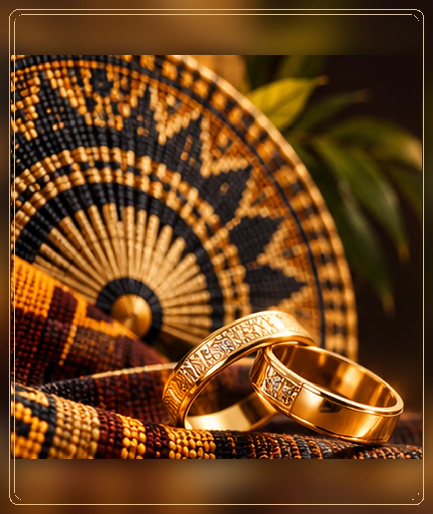

La famille de Naomi
Avec affection, honneur et gratitude, nous vous accueillons pour partager ce moment de famille.
Des souvenirs à inventer, des traditions à honorer et une journée que nous souhaitons partager avec vous.
Samedi 19 juin 2027 ✧ Lubumbashi, RD Congo
Au fil des rencontres et des moments partagés, une belle histoire a grandi.
Naomi & AlexandreUn avant-goût de l’ambiance de notre cérémonie. Ces décors d’inspiration coutumière pourront être remplacés par les photos réelles du couple.
Le mariage coutumier est aussi la rencontre de nos proches, de nos valeurs et de nos histoires. Nous avons hâte de vivre ce moment à vos côtés.
Avec affection, honneur et gratitude, nous vous accueillons pour partager ce moment de famille.
Ensemble, nous célébrons une alliance pleine de respect, de joie et de belles perspectives.
L’intégralité de notre cérémonie coutumière, du premier accueil jusqu’aux réjouissances.
Programme indicatif de démonstration, à adapter aux traditions des familles.
Adresse communiquée prochainement
Lubumbashi, RD Congo
Tenue traditionnelle chic · Violet, lavande & touche d’or
La tenue est librement inspirée de notre palette. Votre présence compte bien plus que votre couleur de vêtement.
Nous serions honorés de partager cette journée avec vous. Merci de nous indiquer votre présence.
Le compte à rebours
Calcul en cours…
Pour les informations sur la cérémonie coutumière, contactez directement les mariés ou l’équipe d’organisation.
Pour un message personnel ou une question concernant notre union.
Coordonnées en cours de configuration.Questions pratiques : accueil, horaires, accès, tenue et déroulement.
Coordonnées en cours de configuration.